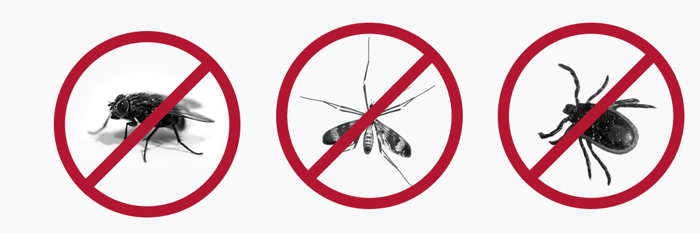
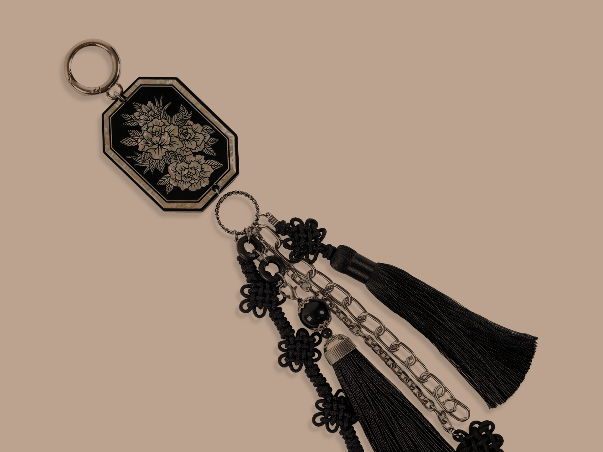

향기롭고 쾌적한 당신의 계절을 위해
해충퇴치 향갑 노리개
추웠던 겨울이 지나 마음도 옷도 가벼워지는 계절이 성큼 다가왔습니다.
하지만 얇아지는 옷 만큼 많아지는 벌레가 두려운 당신.
그런 당신을 위해 서울공예박물관에서 준비한 특별한 프로젝트를 소개합니다
향갑노리개
향을 담은 갑(상자)을 단 노리개로, 옛날 우리 선조들은 향갑 안에 붉은 한지로 감싼 사향(머스크 향의 베이스)을 넣고 다니다 구급약품으로도 사용하기도 했습니다.
우리나라의 향
우리나라는 불교의 영향으로 향료가 들어왔다 추정하는데,
향을 피우면 부처님이 내려와 기원하는 이의 소망을 들어준다는 믿음과 불교가 점차 민간으로 전파됨에 따라 향의 사용도 활발히 이루어지게 되었습니다
향은 몸에 지니고 다니며 향기를 발산하고, 나쁜 냄새를 감추는 치장용 이외에도 치료나 병의 예방 좀벌레 예방과 같은 실용적 수단, 귀신을 물리치고 정신을 맑게한다는 주술적 수단 등 다양한 의미로 사용되며 향이 중요하게 자리잡습니다
향의 필요성이 증대되고, 집단에서 개인의 소유로 확대됨에 따라 향을 소지하고 다니는 방법의 하나로 향집(향낭과 향갑)이 등장했고, 몸에 지니기 위해 주로 의복에 패용되며 노리개에 이용되기 시작합니다.

노리개의 등장
노리개의 기원은 확실하게 규명되지 않았으나 『삼국유사』의 기록 등에 따르면 삼국시대 요패腰佩의 여러 장식에서 비롯되었을 것으로 추측됩니다
고려시대에 등장한 향갑노리개
고려시대 인종 때 고려를 방문했던 송나라 사신이 지은 『선화봉사 고려도경』에 기록이 남아있는데 “부인은···비단으로 만든 향 주머니를 패용한다. ”라는 내용에서 향낭이 달린 노리개를 착용했다는 것이 확인됩니다
이렇게 옛부터 사용된 향갑노리개는 움직일 때마다 부드럽고 은은한 향을 내며 기품 있는 멋을 냈으며, 향갑에 색채나 자수, 문양, 매듭, 술 등의 장식적인 요소들을 더해 복식과 조화를 이뤘습니다
노리개
Project_해충퇴치 향갑노리개
다양한 용도로 활용이 가능했던 향갑노리개 이번 서울공예박물관이 선정한 올해의 브랜드, 산호 스튜디오와 나스첸카와 협업을 통해 해충퇴치 기능 강화로 더욱 실용적이고 현대적인 감각으로 탄생했습니다
효과적인 방충효과
라벤더, 레몬 그라스 등 천연 허브조합 기반 방충액으로 인체에 무해하며 효과적인 해충퇴치 효과
Scent
Top note_플로럴(라벤더)의 향이 레몬그라스향과 어우러져 달콤하고 상큼한 향을 선사합니다
Middle note_은은한 시트러스의 향이 퍼지며 머스크향으로 품위있는 마무리를 선사합니다
Base note_사향(머스크)향이 바닐라와 어우러져 부드럽고 은은한 달콤함을 선사합니다
활용
바지 벨트에 착용하거나 차량 장식, 가방 키링 등 다양한 용도로 활용 가능합니다
기본 상품구성
향갑 노리개+ 향갑 전용 천연 방충 석고타블렛+키링(선택)

가격
구성1_향갑 노리개+ 향갑 전용 천연 방충 석고타블렛 _33,000원 구성2_향갑 노리개+ 향갑 전용 천연 방충 석고타블렛+ O링 키링고리_34,000원 추가1_향갑 노리개 단일_27,000원 추가2_향갑 전용 천연 방충 석고타블렛_5,000원 추가3_O링 키링고리_1,000원
스토어 바로가기
배송안내
현재 물량 부족으로 5/1일 이후 순차적으로 발송 할 예정이며, 연휴 파업 등과 겹칠 시 배송이 지연될 수 있음을 알려드립니다